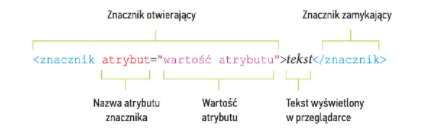

Znaczniki mogą występować z atrybutami, szczegółowo określającymi ich działanie.

Na przykład:
<p align="center">"Warszawa jest stolicą Polski."</p> spowoduje wyświetlenie akapitu z wyśrodkowanym tekstem podanym powyżej, a
<img src="pictures/zdjecie1.png" /img> spowoduje wstawienie zdjęcia o nazwie "zdjecie1" z rozszerzeniem pliku ".png", które znajduje się w folderze "pictures", który jest umieszczony w tym samym miejscu co plik z daną stroną